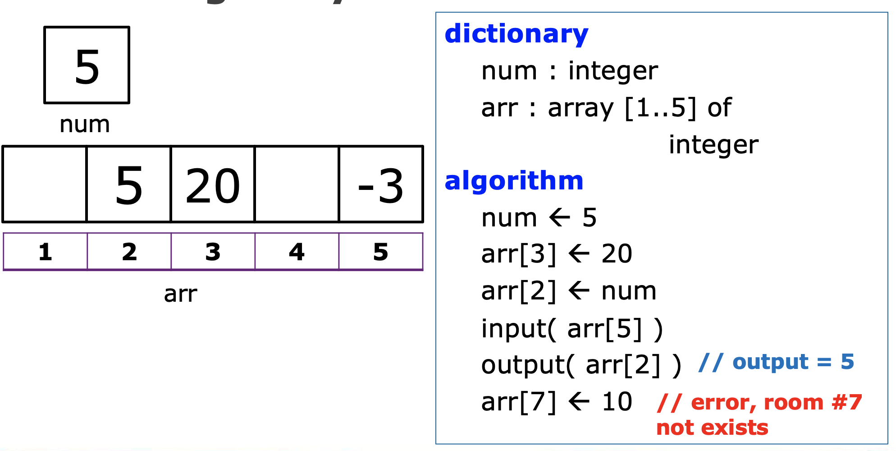

<!DOCTYPE html>
<html lang="en">
  <head>
    <meta charset="utf-8" />
    <meta name="viewport" content="width=device-width, initial-scale=1.0, maximum-scale=1.0, user-scalable=no" />

    <title></title>
    <link rel="stylesheet" href="dist/reveal.css" />
    <link rel="stylesheet" href="dist/theme/blood.css" id="theme" />
    <link rel="stylesheet" href="plugin/highlight/zenburn.css" />
	<link rel="stylesheet" href="css/layout.css" />
	<link rel="stylesheet" href="plugin/customcontrols/style.css">

	<link rel="stylesheet" href="plugin/reveal-pointer/pointer.css" />


    <script defer src="dist/fontawesome/all.min.js"></script>

	<script type="text/javascript">
		var forgetPop = true;
		function onPopState(event) {
			if(forgetPop){
				forgetPop = false;
			} else {
				parent.postMessage(event.target.location.href, "app://obsidian.md");
			}
        }
		window.onpopstate = onPopState;
		window.onmessage = event => {
			if(event.data == "reload"){
				window.document.location.reload();
			}
			forgetPop = true;
		}

		function fitElements(){
			const itemsToFit = document.getElementsByClassName('fitText');
			for (const item in itemsToFit) {
				if (Object.hasOwnProperty.call(itemsToFit, item)) {
					var element = itemsToFit[item];
					fitElement(element,1, 1000);
					element.classList.remove('fitText');
				}
			}
		}

		function fitElement(element, start, end){

			let size = (end + start) / 2;
			element.style.fontSize = `${size}px`;

			if(Math.abs(start - end) < 1){
				while(element.scrollHeight > element.offsetHeight){
					size--;
					element.style.fontSize = `${size}px`;
				}
				return;
			}

			if(element.scrollHeight > element.offsetHeight){
				fitElement(element, start, size);
			} else {
				fitElement(element, size, end);
			}		
		}


		document.onreadystatechange = () => {
			fitElements();
			if (document.readyState === 'complete') {
				if (window.location.href.indexOf("?export") != -1){
					parent.postMessage(event.target.location.href, "app://obsidian.md");
				}
				if (window.location.href.indexOf("print-pdf") != -1){
					let stateCheck = setInterval(() => {
						clearInterval(stateCheck);
						window.print();
					}, 250);
				}
			}
	};


        </script>
  </head>
  <body>
    <div class="reveal">
      <div class="slides"><section  data-markdown><script type="text/template"><!-- .slide: class="drop" -->
<div class="" style="position: absolute; left: 0px; top: 0px; height: 700px; width: 960px; min-height: 700px; display: flex; flex-direction: column; align-items: center; justify-content: center" absolute="true">

## Algorithm and Programming
Lecture 9 - Array Based Sequences 

##### Data Science ITERA 
##### 2022
</div></script></section><section  data-markdown><script type="text/template"><!-- .slide: class="drop" -->
<div class="" style="position: absolute; left: 0px; top: 0px; height: 700px; width: 960px; min-height: 700px; display: flex; flex-direction: column; align-items: center; justify-content: center" absolute="true">

## Lecturer
##### Riksa Meidy Karim, S.Kom., M.Si., M.Sc.
</div></script></section><section  data-markdown><script type="text/template"><!-- .slide: class="drop" -->
<div class="" style="position: absolute; left: 0px; top: 0px; height: 700px; width: 960px; min-height: 700px; display: flex; flex-direction: column; align-items: center; justify-content: center" absolute="true">

## Outline
1. Review
2. Python Sequence Types
3. List
4. Tuples
5. Set
6. Dictionary
7. Strings
8. Numpy Arrays
</div></script></section><section  data-markdown><script type="text/template"><!-- .slide: class="drop" -->
<div class="" style="position: absolute; left: 0px; top: 0px; height: 700px; width: 960px; min-height: 700px; display: flex; flex-direction: column; align-items: center; justify-content: center" absolute="true">

## 01 
### Review
</div></script></section><section  data-markdown><script type="text/template"><!-- .slide: class="drop" -->
<div class="" style="position: absolute; left: 0px; top: 0px; height: 700px; width: 960px; min-height: 700px; display: flex; flex-direction: column; align-items: center; justify-content: center" absolute="true">

#### Key Aspect of Python's Object model

- Identifiers 
- Objects
- Assignment Statement
</div></script></section><section  data-markdown><script type="text/template"><!-- .slide: class="drop" -->
<div class="" style="position: absolute; left: 0px; top: 0px; height: 700px; width: 960px; min-height: 700px; display: flex; flex-direction: column; align-items: center; justify-content: center" absolute="true">

#### Mini Quiz

``` python
A = 10
B = 80.05
A = B

```

Describe the identifiers , the object and illustrate what happened.
</div></script></section><section  data-markdown><script type="text/template"><!-- .slide: class="drop" -->
<div class="" style="position: absolute; left: 0px; top: 0px; height: 700px; width: 960px; min-height: 700px; display: flex; flex-direction: column; align-items: center; justify-content: center" absolute="true">

#### Answer
- Identifier : A,B
- Objects : 10 , 80.05
- What happened:
	- A points to object 10 in the memory
	- A then points to the object 80.05 which B points
	- The memory address of A and B are the same
</div></script></section><section  data-markdown><script type="text/template"><!-- .slide: class="drop" -->
<div class="" style="position: absolute; left: 0px; top: 0px; height: 700px; width: 960px; min-height: 700px; display: flex; flex-direction: column; align-items: center; justify-content: center" absolute="true">

#### Before

<div class="mermaid">
flowchart LR
subgraph 0x26661
10
end
A --> 0x26661

subgraph 0x27771
80.05
end
 B --> 0x27771


</div>


#### After Assignment A = B

<div class="mermaid">
flowchart LR
subgraph 0x26661
10
end

subgraph 0x27771
80.05
end
 B --> 0x27771
 A --> 0x27771


</div>
</div></script></section><section  data-markdown><script type="text/template"><!-- .slide: class="drop" -->
<div class="" style="position: absolute; left: 0px; top: 0px; height: 700px; width: 960px; min-height: 700px; display: flex; flex-direction: column; align-items: center; justify-content: center" absolute="true">

#### What about This?
```python
A = 10
B = 80.05
A = A + B
```


<div class="mermaid">
flowchart
subgraph 0x2661
10
end

subgraph 0x2771
80.05
end

A-->0x2661
B-->0x2771

</div>
</div></script></section><section  data-markdown><script type="text/template"><!-- .slide: class="drop" -->
<div class="" style="position: absolute; left: 0px; top: 0px; height: 700px; width: 960px; min-height: 700px; display: flex; flex-direction: column; align-items: center; justify-content: center" absolute="true">

#### Answer

<div class="mermaid">
flowchart
subgraph 0x2661

90.05

end

subgraph 0x2771
80.05
end

A-->0x2661
B-->0x2771


</div>


in 0x2661 80.05 is replaced with 10 + 80.05

The memory address of A and B remains different.
</div></script></section><section  data-markdown><script type="text/template"><!-- .slide: class="drop" -->
<div class="" style="position: absolute; left: 0px; top: 0px; height: 700px; width: 960px; min-height: 700px; display: flex; flex-direction: column; align-items: center; justify-content: center" absolute="true">

## 02 
### Python Sequence Types
</div></script></section><section  data-markdown><script type="text/template"><!-- .slide: class="drop" -->
<div class="" style="position: absolute; left: 0px; top: 0px; height: 700px; width: 960px; min-height: 700px; display: flex; flex-direction: column; align-items: center; justify-content: center" absolute="true">

#### Sequence Classes in Python

- List
- Tuple
- str

<div class="block">

<!-- .element: style="background-color: green" -->
These classes has commonality:
- Uses low level concept known as **array**
- support indexing to access individual element of the sequence
</div>
</div></script></section><section  data-markdown><script type="text/template"><!-- .slide: class="drop" -->
<div class="" style="position: absolute; left: 0px; top: 0px; height: 700px; width: 960px; min-height: 700px; display: flex; flex-direction: column; align-items: center; justify-content: center" absolute="true">

#### What is the output?

List Example:
```python
listku = [1,2,3]
listku.append(4)
print(listku[0])
```
Tuples Example:
```python
tupelku = (1,2,4)
print( tupelku[1] )
```
str Example:
```python
stringku = 'Hello Data Science is Awesome.'
print(stringku[1])
```
</div></script></section><section  data-markdown><script type="text/template"><!-- .slide: class="drop" -->
<div class="" style="position: absolute; left: 0px; top: 0px; height: 700px; width: 960px; min-height: 700px; display: flex; flex-direction: column; align-items: center; justify-content: center" absolute="true">

#### The concept of arrays
- Store multiple data of **the same type** in a variable
- arrangement of a set of data can be accessed via an **index**
- The size of an array must be **specified**
</div></script></section><section  data-markdown><script type="text/template"><!-- .slide: class="drop" -->
<div class="" style="position: absolute; left: 0px; top: 0px; height: 700px; width: 960px; min-height: 700px; display: flex; flex-direction: column; align-items: center; justify-content: center" absolute="true">

#### Array Illustrations 


</div></script></section><section  data-markdown><script type="text/template"><!-- .slide: class="drop" -->
<div class="" style="position: absolute; left: 0px; top: 0px; height: 700px; width: 960px; min-height: 700px; display: flex; flex-direction: column; align-items: center; justify-content: center" absolute="true">

#### Multidimentional Arrays
- 1 Dimensional array
	- Vector, String
- 2 Dimensional array
	- Table , Matrix
</div></script></section><section  data-markdown><script type="text/template"><!-- .slide: class="drop" -->
<div class="" style="position: absolute; left: 0px; top: 0px; height: 700px; width: 960px; min-height: 700px; display: flex; flex-direction: column; align-items: center; justify-content: center" absolute="true">

#### 2D Array Illustrations

</div></script></section><section  data-markdown><script type="text/template"><!-- .slide: class="drop" -->
<div class="" style="position: absolute; left: 0px; top: 0px; height: 700px; width: 960px; min-height: 700px; display: flex; flex-direction: column; align-items: center; justify-content: center" absolute="true">

#### Mini Quiz
- Are arrays and lists the same object ? if not, what are the differences?
- For big amount of data, which one do you prefer, Lists or Arrays? Why?
</div></script></section><section  data-markdown><script type="text/template"><!-- .slide: class="drop" -->
<div class="" style="position: absolute; left: 0px; top: 0px; height: 700px; width: 960px; min-height: 700px; display: flex; flex-direction: column; align-items: center; justify-content: center" absolute="true">

## 03
### Lists
</div></script></section><section  data-markdown><script type="text/template"><!-- .slide: class="drop" -->
<div class="" style="position: absolute; left: 0px; top: 0px; height: 700px; width: 960px; min-height: 700px; display: flex; flex-direction: column; align-items: center; justify-content: center" absolute="true">

#### List Basic
- written with []
- index starts at 0
- access element using []
- use len() function to know how many elements
- can contains mixed element type
- size of element is not fixed

```python

L = ['Car',1,20.05 , 'Alpro']
L[0] # access the first element
print(L[0])
len(L) # the number of element in the list
print(len(L))

```
</div></script></section><section  data-markdown><script type="text/template"><!-- .slide: class="drop" -->
<div class="" style="position: absolute; left: 0px; top: 0px; height: 700px; width: 960px; min-height: 700px; display: flex; flex-direction: column; align-items: center; justify-content: center" absolute="true">

#### Accessing List Elements
- using single index
- using negative indexing
- index slicing

```python
L = [1,2,3,4,5,6]
# single index
print( L[2] )

# using negative index
print( L[-2] )

# index slicing
print( L[0:3] )
```
</div></script></section><section  data-markdown><script type="text/template"><!-- .slide: class="drop" -->
<div class="" style="position: absolute; left: 0px; top: 0px; height: 700px; width: 960px; min-height: 700px; display: flex; flex-direction: column; align-items: center; justify-content: center" absolute="true">

#### Negative index
L =  [1,2,3,4,5]

index : [-5,-4,-3-2,-1]

L[-5] : 1

L[-1] : 5

L[-2] : 4
</div></script></section><section  data-markdown><script type="text/template"><!-- .slide: class="drop" -->
<div class="" style="position: absolute; left: 0px; top: 0px; height: 700px; width: 960px; min-height: 700px; display: flex; flex-direction: column; align-items: center; justify-content: center" absolute="true">

#### Index Slicing
L =  [1,2,3,4,5]
- to select a range from its elements with a rule of  \[start , end )
- the start index is included, but the end is not
- can also use negative index
</div></script></section><section  data-markdown><script type="text/template"><!-- .slide: class="drop" -->
<div class="" style="position: absolute; left: 0px; top: 0px; height: 700px; width: 960px; min-height: 700px; display: flex; flex-direction: column; align-items: center; justify-content: center" absolute="true">

#### Index Slicing
```python
L = [1,2,3,4,5,6]
# select all
print( L[:] )

# first 5 element ( index 0 - 4 )
print( L[:5] )

# last 3 element
print( L[-3:] )

# from second element until last 2 element
print( L[1:-1] )

# from first element until last 2 element
print( L[:-1] )

```
</div></script></section><section  data-markdown><script type="text/template"><!-- .slide: class="drop" -->
<div class="" style="position: absolute; left: 0px; top: 0px; height: 700px; width: 960px; min-height: 700px; display: flex; flex-direction: column; align-items: center; justify-content: center" absolute="true">

#### Changing  List Element
```python

L = [1,3,5,7,11,13,17]

# Changing 1 element
L[0] = 2
print(L)

# Changing multiple element by slicing
L[2:4] = 0 
print(L)

```
</div></script></section><section  data-markdown><script type="text/template"><!-- .slide: class="drop" -->
<div class="" style="position: absolute; left: 0px; top: 0px; height: 700px; width: 960px; min-height: 700px; display: flex; flex-direction: column; align-items: center; justify-content: center" absolute="true">

#### Adding List Element
- Append
- Insert
- Extend
- Concatenation
</div></script></section><section  data-markdown><script type="text/template"><!-- .slide: class="drop" -->
<div class="" style="position: absolute; left: 0px; top: 0px; height: 700px; width: 960px; min-height: 700px; display: flex; flex-direction: column; align-items: center; justify-content: center" absolute="true">

#### Adding List Element
```python
L = [2,3,5,7,11,13,17]

# append
L.append(19)
print(f"Append : {L} ")

# Insert
L.insert(3,6)
print(f"Insert at index 3 , value: 6 , {L}")
```
``` python
# Extend
L.extend([23,29])
print(f"Extending [23,29] to L: {L}")

# Concatenation 
L = [1,2,3] + [4,5,6]
print(f"concate [1,2,3] and [4,5,6] , {L} ")
```
</div></script></section><section  data-markdown><script type="text/template"><!-- .slide: class="drop" -->
<div class="" style="position: absolute; left: 0px; top: 0px; height: 700px; width: 960px; min-height: 700px; display: flex; flex-direction: column; align-items: center; justify-content: center" absolute="true">

#### Deleting List Element
- del
- remove
- pop
</div></script></section><section  data-markdown><script type="text/template"><!-- .slide: class="drop" -->
<div class="" style="position: absolute; left: 0px; top: 0px; height: 700px; width: 960px; min-height: 700px; display: flex; flex-direction: column; align-items: center; justify-content: center" absolute="true">

#### Deleting List Element
```python
L = [2,3,5,7,11,13,17]
# using del
del L[0]
print(f"deleting element at index 0 , {L}")
del L[-2:]
print(f"deleting last 2 element using slicing , {L} ")
# remove : search and remove the element
L = [1,2,3,4,5,6]
L.remove(5)
print(L)
# pop
L = [2,3,4,5,6,11]
L.pop(3)
```
</div></script></section><section  data-markdown><script type="text/template"><!-- .slide: class="drop" -->
<div class="" style="position: absolute; left: 0px; top: 0px; height: 700px; width: 960px; min-height: 700px; display: flex; flex-direction: column; align-items: center; justify-content: center" absolute="true">

#### Other methods
- .index()
- .sort()
- .reverse()
</div></script></section><section  data-markdown><script type="text/template"><!-- .slide: class="drop" -->
<div class="" style="position: absolute; left: 0px; top: 0px; height: 700px; width: 960px; min-height: 700px; display: flex; flex-direction: column; align-items: center; justify-content: center" absolute="true">

#### Other Methods
```python
L = [1,2,3,4,5,6,7,8]
print( L.index(5) )
L = [18,2,90,8,17,2]
L.sort()
print(L)
L.reverse()
print(L)
```
</div></script></section><section  data-markdown><script type="text/template"><!-- .slide: class="drop" -->
<div class="" style="position: absolute; left: 0px; top: 0px; height: 700px; width: 960px; min-height: 700px; display: flex; flex-direction: column; align-items: center; justify-content: center" absolute="true">

#### Iterating List
- for in loop
```python
L = [1,2,4,5,6,7,8]
for l in L:
	print(l)
```
- for in range
```python
L = [1,2,3,4,5,6,7,8]
for i in range(len(L)):
	print(L[i])
```
- while loop
```python
L = [1,2,3,4,5,6]
i = 0
while i < len(L):
	print(L[i])
	i=i+1
```
</div></script></section><section  data-markdown><script type="text/template"><!-- .slide: class="drop" -->
<div class="" style="position: absolute; left: 0px; top: 0px; height: 700px; width: 960px; min-height: 700px; display: flex; flex-direction: column; align-items: center; justify-content: center" absolute="true">

## 04
### Tuples
</div></script></section><section  data-markdown><script type="text/template"><!-- .slide: class="drop" -->
<div class="" style="position: absolute; left: 0px; top: 0px; height: 700px; width: 960px; min-height: 700px; display: flex; flex-direction: column; align-items: center; justify-content: center" absolute="true">

#### Tuple Basic
- Similar to list
- But, once the element is assigned we cannot change its value
- created by using ()
- can contain mixed data type
</div></script></section><section  data-markdown><script type="text/template"><!-- .slide: class="drop" -->
<div class="" style="position: absolute; left: 0px; top: 0px; height: 700px; width: 960px; min-height: 700px; display: flex; flex-direction: column; align-items: center; justify-content: center" absolute="true">

#### Creating tuple
```python
# Empty tuple
t = ()
# tuple with single data type
t = (1,2,3,4,5)
# tuple with single element
t = (2,)
# tuple inside tuple
t = (1,2, (2,5) )
# tuple with mixed data types
t = (1,2,3,'Data Science',[4,5,6])
```
</div></script></section><section  data-markdown><script type="text/template"><!-- .slide: class="drop" -->
<div class="" style="position: absolute; left: 0px; top: 0px; height: 700px; width: 960px; min-height: 700px; display: flex; flex-direction: column; align-items: center; justify-content: center" absolute="true">

#### Common misconception
```python
t = (1) # this will not create tuple
t = (1,) # this will create tuple with single element
```
- without the comma, python will interpret it as an expression, not as an instantiation of tuple class.
</div></script></section><section  data-markdown><script type="text/template"><!-- .slide: class="drop" -->
<div class="" style="position: absolute; left: 0px; top: 0px; height: 700px; width: 960px; min-height: 700px; display: flex; flex-direction: column; align-items: center; justify-content: center" absolute="true">

#### Tuple Packing
- it is also possible not to use ()
```python
t = 1,2,3,'hello'
print(t)
```
#### Tuple unpacking
- unpack tuple to single variable
```python
a,b,c,d = t
print(t)
print(a,b,c,d)
```
</div></script></section><section  data-markdown><script type="text/template"><!-- .slide: class="drop" -->
<div class="" style="position: absolute; left: 0px; top: 0px; height: 700px; width: 960px; min-height: 700px; display: flex; flex-direction: column; align-items: center; justify-content: center" absolute="true">

#### Accessing Tuple elements
- using single index
- using negative indexing
- index slicing
```python
t = 1,2,3,4,5
print(t[0])
print(t[-1])
print(t[:3])
```
</div></script></section><section  data-markdown><script type="text/template"><!-- .slide: class="drop" -->
<div class="" style="position: absolute; left: 0px; top: 0px; height: 700px; width: 960px; min-height: 700px; display: flex; flex-direction: column; align-items: center; justify-content: center" absolute="true">

#### Changing Tuple
- Cannot change its element once it is assigned (immutable)
- But we can re assigned the tuple to a different value
```python
t = (1,2,5,7,8)
# changing element will result in error
t[2] = 11
# tuple can be reassigned
t = (11,12,13,'hello')
```
</div></script></section><section  data-markdown><script type="text/template"><!-- .slide: class="drop" -->
<div class="" style="position: absolute; left: 0px; top: 0px; height: 700px; width: 960px; min-height: 700px; display: flex; flex-direction: column; align-items: center; justify-content: center" absolute="true">

#### Mini Quiz
- Can the element of tuple T be changed from [9,5] to [9,4] ? Why?
```python
T = ('hello',10,[9,5])
```
</div></script></section><section  data-markdown><script type="text/template"><!-- .slide: class="drop" -->
<div class="" style="position: absolute; left: 0px; top: 0px; height: 700px; width: 960px; min-height: 700px; display: flex; flex-direction: column; align-items: center; justify-content: center" absolute="true">

#### Operation on Tuples
- Concatenation using '+'
- Repeat using '\*' 

```python
M = (1,2,3) + (4,5,'hello')
print(M)
N = (1,2) * 3
print(N)
```
</div></script></section><section  data-markdown><script type="text/template"><!-- .slide: class="drop" -->
<div class="" style="position: absolute; left: 0px; top: 0px; height: 700px; width: 960px; min-height: 700px; display: flex; flex-direction: column; align-items: center; justify-content: center" absolute="true">

#### Deleting Tuples
- You cannot delete an element in tuples
- You can only **delete whole tuples**

```python 
# define tuple
t = (1,2,3)
# this will result an error
del t[3]
# this will delete entire tuple
del t
```
</div></script></section><section  data-markdown><script type="text/template"><!-- .slide: class="drop" -->
<div class="" style="position: absolute; left: 0px; top: 0px; height: 700px; width: 960px; min-height: 700px; display: flex; flex-direction: column; align-items: center; justify-content: center" absolute="true">

#### Tuple Methods
- count()
- index()
- check element exists using keyword 'in'
```python
t = (1,2,3,4,'el',4,5,4,1)
print( t.count(4) )
print(t.index('el') )
print( 'el' in t )
print('el' not in t)
```
</div></script></section><section  data-markdown><script type="text/template"><!-- .slide: class="drop" -->
<div class="" style="position: absolute; left: 0px; top: 0px; height: 700px; width: 960px; min-height: 700px; display: flex; flex-direction: column; align-items: center; justify-content: center" absolute="true">

#### Iterating through tuple
- similar like list
```python
t = (1,2,3,4,'Hello')
for el in t:
	print(el)
```
</div></script></section><section  data-markdown><script type="text/template"><!-- .slide: class="drop" -->
<div class="" style="position: absolute; left: 0px; top: 0px; height: 700px; width: 960px; min-height: 700px; display: flex; flex-direction: column; align-items: center; justify-content: center" absolute="true">

#### Tuple vs List
- tuple is faster than list but tupple is immutable
- tuple is good for unchanged data because it will guarantee the data will remain write protected
</div></script></section><section  data-markdown><script type="text/template"><!-- .slide: class="drop" -->
<div class="" style="position: absolute; left: 0px; top: 0px; height: 700px; width: 960px; min-height: 700px; display: flex; flex-direction: column; align-items: center; justify-content: center" absolute="true">

## 05
### Set
</div></script></section><section  data-markdown><script type="text/template"><!-- .slide: class="drop" -->
<div class="" style="position: absolute; left: 0px; top: 0px; height: 700px; width: 960px; min-height: 700px; display: flex; flex-direction: column; align-items: center; justify-content: center" absolute="true">

#### Set Basic
- Unordered collection of items: no index
- Every set element is unique
- Every set element is immutable
- But an element can be added or removed into the set
- Can contain mixed types element
</div></script></section><section  data-markdown><script type="text/template"><!-- .slide: class="drop" -->
<div class="" style="position: absolute; left: 0px; top: 0px; height: 700px; width: 960px; min-height: 700px; display: flex; flex-direction: column; align-items: center; justify-content: center" absolute="true">

#### Creating Set
- Using {}
```python
s = {'A','B','C'}
s = {1,'A','B'}
```
- Sets cannot have a mutable elements like list, set or dictionary
```python
# This will result an error
s ={1,2,3,[1,2,3]}
```
- sets cannot contain duplicate element
```python
s = {1,1,1,2,2,2,3}
print(s)
```
- creating empty set
```python
s = set()
```
</div></script></section><section  data-markdown><script type="text/template"><!-- .slide: class="drop" -->
<div class="" style="position: absolute; left: 0px; top: 0px; height: 700px; width: 960px; min-height: 700px; display: flex; flex-direction: column; align-items: center; justify-content: center" absolute="true">

#### Modifying Set
- set is unordered, so you cannot access its element by index
- using add() to add single element.
- using update() to add multiple element that can cointains list, tuples or strings.
</div></script></section><section  data-markdown><script type="text/template"><!-- .slide: class="drop" -->
<div class="" style="position: absolute; left: 0px; top: 0px; height: 700px; width: 960px; min-height: 700px; display: flex; flex-direction: column; align-items: center; justify-content: center" absolute="true">

#### Modifying Set
```python
s = {1,2}
s.add(5)
print(s)
s.update([1,4,3,5])
print(s)
s.update([11,2],{13,22,31})
print(s)
```
</div></script></section><section  data-markdown><script type="text/template"><!-- .slide: class="drop" -->
<div class="" style="position: absolute; left: 0px; top: 0px; height: 700px; width: 960px; min-height: 700px; display: flex; flex-direction: column; align-items: center; justify-content: center" absolute="true">

#### Removing element from a Set
- remove()
- discard()
- pop()
- clear()
</div></script></section><section  data-markdown><script type="text/template"><!-- .slide: class="drop" -->
<div class="" style="position: absolute; left: 0px; top: 0px; height: 700px; width: 960px; min-height: 700px; display: flex; flex-direction: column; align-items: center; justify-content: center" absolute="true">

#### Removing element from a Set
```python
s = {1,2,3,4,5,6,7,8,9,10}
# remove, will return error if element is not present in the set
s.remove(3)
print(s)
# discard
s.discard(8)
s.discard(3)
print(s)
```

```python
# pop randomly choose element to delete
s.pop()
print(s)
s.pop()
print(s)
# clear empties the set
s.clear()
print(s)
```
</div></script></section><section  data-markdown><script type="text/template"><!-- .slide: class="drop" -->
<div class="" style="position: absolute; left: 0px; top: 0px; height: 700px; width: 960px; min-height: 700px; display: flex; flex-direction: column; align-items: center; justify-content: center" absolute="true">

#### Set Operation
- Union
- Intersection
- Set Difference
- Set Symentric Difference
</div></script></section><section  data-markdown><script type="text/template"><!-- .slide: class="drop" -->
<div class="" style="position: absolute; left: 0px; top: 0px; height: 700px; width: 960px; min-height: 700px; display: flex; flex-direction: column; align-items: center; justify-content: center" absolute="true">

#### Set Operation
```python
A = {1,2,3,4,5}
B = {4,5,6,7,8}
# Union
print(A | B)
print(A.union(B))
# Intersection
print(B & A)
print(B.intersection(A))
# Set Difference
print(A - B)
print(A.difference(B))
# Symentric difference
print(A ^ B)
print(A.symmetric_difference(B))
```
</div></script></section><section  data-markdown><script type="text/template"><!-- .slide: class="drop" -->
<div class="" style="position: absolute; left: 0px; top: 0px; height: 700px; width: 960px; min-height: 700px; display: flex; flex-direction: column; align-items: center; justify-content: center" absolute="true">

#### Other set methods
- check element exist in set using 'in' keyword
- other built in method: all() , any(), enumerate(), len(),max(), min(), sorted(),sum()
</div></script></section><section  data-markdown><script type="text/template"><!-- .slide: class="drop" -->
<div class="" style="position: absolute; left: 0px; top: 0px; height: 700px; width: 960px; min-height: 700px; display: flex; flex-direction: column; align-items: center; justify-content: center" absolute="true">

## 06
### Dictionary
</div></script></section><section  data-markdown><script type="text/template"><!-- .slide: class="drop" -->
<div class="" style="position: absolute; left: 0px; top: 0px; height: 700px; width: 960px; min-height: 700px; display: flex; flex-direction: column; align-items: center; justify-content: center" absolute="true">

#### Dictionary Basic
- key-value pair
- optimized to retrieve values when the key is known
- notation: {key:value , key2:value2, ...}
- the keys **must be immutable** data type
- the value can be of any data type
</div></script></section><section  data-markdown><script type="text/template"></script></section><section  data-markdown><script type="text/template"><!-- .slide: class="drop" -->
<div class="" style="position: absolute; left: 0px; top: 0px; height: 700px; width: 960px; min-height: 700px; display: flex; flex-direction: column; align-items: center; justify-content: center" absolute="true">

## Reference

- Michael T. Goodrich, et al. 2013. ***Data Structures and Algorithms*** ***in Python*** (1st. ed.). Wiley Publishing
- Lecture Slides from Telkom University Informatics Engineering Basic Algorithm and Programming class.
- [Google for Education - Python](https://developers.google.com/edu/python/)
</div></script></section></div>
    </div>

    <script src="dist/reveal.js"></script>

    <script src="plugin/markdown/markdown.js"></script>
    <script src="plugin/highlight/highlight.js"></script>
    <script src="plugin/zoom/zoom.js"></script>
    <script src="plugin/notes/notes.js"></script>
    <script src="plugin/math/math.js"></script>
	<script src="plugin/mermaid/mermaid.js"></script>
	<script src="plugin/chart/chart.min.js"></script>
	<script src="plugin/chart/plugin.js"></script>
	<script src="plugin/menu/menu.js"></script>
	<script src="plugin/customcontrols/plugin.js"></script>
	<script src="plugin/reveal-pointer/pointer.js"></script>

    <script>
      function extend() {
        var target = {};
        for (var i = 0; i < arguments.length; i++) {
          var source = arguments[i];
          for (var key in source) {
            if (source.hasOwnProperty(key)) {
              target[key] = source[key];
            }
          }
        }
        return target;
      }

	  function isLight(color) {
		let hex = color.replace('#', '');

		// convert #fff => #ffffff
		if(hex.length == 3){
			hex = `${hex[0]}${hex[0]}${hex[1]}${hex[1]}${hex[2]}${hex[2]}`;
		}

		const c_r = parseInt(hex.substr(0, 2), 16);
		const c_g = parseInt(hex.substr(2, 2), 16);
		const c_b = parseInt(hex.substr(4, 2), 16);
		const brightness = ((c_r * 299) + (c_g * 587) + (c_b * 114)) / 1000;
		return brightness > 155;
	}

	var bgColor = getComputedStyle(document.documentElement).getPropertyValue('--r-background-color').trim();
	var isLight = isLight(bgColor);

	if(isLight){
		document.body.classList.add('has-light-background');
	} else {
		document.body.classList.add('has-dark-background');
	}

      // default options to init reveal.js
      var defaultOptions = {
        controls: true,
        progress: true,
        history: true,
        center: true,
        transition: 'default', // none/fade/slide/convex/concave/zoom
        plugins: [
          RevealMarkdown,
          RevealHighlight,
          RevealZoom,
          RevealNotes,
          RevealMath.MathJax3,
		  RevealMermaid,
		  RevealChart,
		  RevealCustomControls,
		  RevealMenu,
	      RevealPointer
        ],


    	allottedTime: 120 * 1000,

		mathjax3: {
			mathjax: 'plugin/math/mathjax/tex-mml-chtml.js',
		},
		markdown: {
		  gfm: true,
		  mangle: true,
		  pedantic: false,
		  smartLists: false,
		  smartypants: false,
		},

		mermaid: {
			theme: isLight ? 'default' : 'dark',
		},

		customcontrols: {
			controls: [
				{id: 'toggle-overview',
				title: 'Toggle overview (O)',
				icon: '<i class="fa fa-th"></i>',
				action: 'Reveal.toggleOverview();'
				},
			]
		},
		menu: {
			loadIcons: false
		}
      };

      // options from URL query string
      var queryOptions = Reveal().getQueryHash() || {};

      var options = extend(defaultOptions, {"width":960,"height":700,"margin":0.04,"controls":true,"progress":true,"slideNumber":true,"transition":"slide","transitionSpeed":"default"}, queryOptions);
    </script>

    <script>
      Reveal.initialize(options);
    </script>
  </body>

  <!-- created with Advanced Slides -->
</html>
